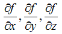

|
Calculus - Overview Home : www.sharetechnote.com |
|
Simply put, Calculus is a branch of mathematics that studies the concepts show as below. In short, it is mainly about 'change in very small interval' and extend the concept to large scale to figure out big picture.
It seems that when you first start learning this is different depending on country. At least, when I was in school, I was tought about the basic concept of these in high school. The first thing I was tought was about lim, differentiation and integration with a single real variable and I didn't have much problems understanding those concepts, but when I come across these concepts to multi variable and complex variables, everything started confusing me. For long time, my question has been "Why I am getting so much confused and fail to get clear understanding these concepts when I have just a couple of more variables whereas I didn't have much difficulties with a single variable in high school ?" Actually I have had similar question for most of the area in mathematics. Conceptually what we are supposed to deal with in Engineering is the one we already covered in high school. The only differences in many cases is just extension of dimensions. I kept asking myself why the similar concepts look so complicated and difficult whereas I didn't have much problems in high school. I think it would be because of a couple of major factors as follows. i) Extension of Dimension is not as simple as you might think. (So don't expect it to be simple and be prepared to put a lot of effort and time to learn the same thing in increased dimension). ii) Many math courses/lectures skips the basic concepts based on assumtion that those were already covered in some previous courses. But this assumption does not always work due to followings. a) It was covered in some previous coures, but they were already forgotten b) It was covered in previous course but there would be some missing links between what was covered in previous course and what is convered in current courses, but nobody explains about the missing link. For example, text book, teachers, lecturers spend a lot of time and effort to explain following concept with various different way of approaches (text, graph, illustrations). But when they teach following concept, they don't spend much time and effort to explain basic idea. It seems that they just assume that student would understand this concepts easily based on what they have learned about the single variable case as mentioned above. But at least, that assumption didn't work for me. I may learn how to solve a problem in terms of mathematical operations, but I don't think I have clear understanding of what is the real meaning of the problem and what is real meaning of the solution that I myself came out. 
What I am trying to do in this post is to explain the important concepts of calculus even for multi variable case in such a way that they are explained in high school math or pre-calculus course. Of course, this would not be as easy as I may think and will take long time and effort. I know I should be prepared to keep updating these pages at least for a couple of years.
|